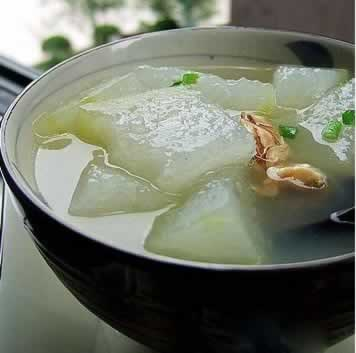

这些调味料准妈妈不宜多吃
很多准妈妈在孕期可能都会偏好某一种味道，还是会叮嘱家人多加点调料，但准妈妈们往往忽略了一些调料虽然美味，但可能会带来危害。如下调料准妈妈不宜多吃：
1、盐：盐分摄入过多，会导致孕期身体浮肿（足踝及小腿皮肤用手按压出现凹陷），如长时间站立行走、中午不午睡则会更加严重。这是因为孕妇内分泌变化，导致水潴留（指机体在组织间隙里积存了过多的水并且无法通过排尿等方式将其排出）；同时增大的子宫压迫下肢静脉，使血液回流受阻，下肢出现浮肿。
2、酱油：酱油中也含有盐分，同时酱油中含有一定量的防腐剂和色素，孕期应该尽量少吃。
3、辣椒：辣椒是一种营养成分丰富的蔬菜，含有大量的维生素，适量吃辣椒对人摄取全面的营养成分有好处。但过量食用辣椒会刺激肠胃、引起便秘、加快血流量等。准妈妈虽然不需绝对禁吃辣椒，但务必应适量少食。
4、花椒、八角、桂皮、五香粉：这些均属于热性调味品，易消耗肠道水分，使肠道分泌液减少而造成肠道干燥和便秘，孕妇应尽量少吃。
5、味精：味精的主要成分是谷氨酸钠，血液中的锌与之结合后从尿中排出。味精食入过多会消耗大量的锌，导致体内缺锌。锌是胎儿生长发育的重要微量元素，孕妇应少吃味精为宜。
6、姜：生姜刺激性较大，容易引起肠道不适感，但适量的姜能够缓解早期孕吐以及预防感冒，所以，做饭时，用少量的姜调味即可。
本周推荐尝试食谱1：
酸菜鱼丸推荐理由：酸菜具有清热解毒、开胃健脾之作用，本菜酸爽可口，可使孕妇食欲增强。
食谱原料：
酸菜1袋，鲤鱼或草鱼1条，葱姜、盐、淀粉适量，鸡蛋1个。
制作方法：
1，酸菜从袋中取出，用清水泡。草鱼（鲤鱼）去骨去皮。
2，将草鱼（鲤鱼）用刀背剁烂，并去除刺。
3，将准备好的鱼馅料加鸡蛋一枚，水少许，淀粉少许搅拌成丸子馅
4，准备开水。加鱼骨，葱，姜，鱼尾，烧开，做好鱼汤。然后过滤骨刺，只留清汤。
5，用清汤把鱼丸汆熟。取出。
6，锅里加油，煎炸鱼头，放入酸菜，加盐和料酒。然后把汆好的丸子和清汤倒入，煮至熟透。
本周推荐尝试食谱2：
冬瓜鸭肉汤
推荐理由：这道菜益气养血、滋养五脏，孕妇吃此菜能获得全面而合理的营养素。
食谱原料：
鸭肉200克，冬瓜100克，胡萝卜、姜片各少许。
制作方法：
1、把光鸭肉清洗干净后斩件，凉水放入锅里，加几片姜片、葱苗煮开并不断把水面的血沫浮物去掉;
2、同时，把冬瓜、胡萝卜切块，并在另外一个炉头烧一锅开水，把准备好的光鸭肉倒入，中火继续煮30分钟，加入冬瓜、胡萝卜继续中火煮20分钟，转小火煮约30分钟，至鸭肉、冬瓜熟烂即可;
3、喝汤前根据个人口味加入适量的盐即可。